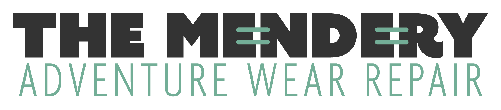

Madison Haley is once again joining us to offer up their physical therapy and massage services for anyone in need!
As one of the few local LGBTQ+ practitioners in their field, Madison is passionate about helping the queer community find safe, affirming providers they can trust.
Allison Ousley is a local ceramicist and local ripper on the bike! Check out her rad resist designs and be sure to say hello as she muscles up the Leatherwood hills on her singlespeed!
We thrifted and screenprinted 70 garments just for you!
Come peruse our wares and make it in time to leave with one of our rare one-of-one Grit Fest babydoll t shirts!
The punk truck stop is a load bearing piece of cultural and social infrastructure in Northwest Arkansas. They sell a variety of wares and ensure that live music acts have a space to perform that will not induce psychic damage.
Cyanotype printing presented by the soon-to-be open Silver House Community Dark room!
Print on your own gear or clothes or purchase a shirt to support what will soon be NWA's only publicly available darkroom!
Dillen Wilder and Ciara Logan will be chatting about their experiences navigating the backcountry, and bikepacking as athletes with needs that aren't always accounted for by remote motels or event organizers.
Nice bike or crack pipe? Join our friends Mer and Emily as they walk you through the ins-and-outs of finding your dream bike among the wasteland of riches that is Facebook Marketplace
A hands-on workshop covering the broad strokes of trailside first aid. This is not a comprehensive course by any means but a great opportunity to dip your toes into some valuable skills for being the best recreating pal you can be!

Catastrophic tire slash? Hole in your rain jacket? Busted stuff sack? Local gear repair wizard Jen walks us through some essential trailside repairs!
Take an informative stroll through the trails of Lake Leatherwood on foot with local plant professional Katie White!